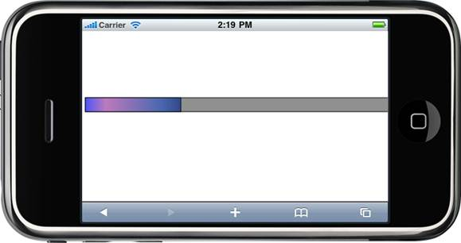

1. In View, invoke the ProgressBar helper with the control ID as an argument and define the BackgroundColor, ProgressBarColor, ProgressBarBorderColor and BorderColor properties of the ProgressBar.
|
[ASPX] <% Html.MobSyncfusion().ProgressBar("progressBar") .Value(30) .AutoFormat(MobSkins.Custom) .ProgressBarBorderColor("Black") .ProgressBarColor(newBrush(newColorInfo[] { newColorInfo(System.Drawing.Color.FromArgb(100, 76, 86, 249), 0), newColorInfo(System.Drawing.Color.FromArgb(200, 188, 123, 189), 0.213), newColorInfo(System.Drawing.Color.FromArgb(100, 73, 103, 175), 0.801), newColorInfo(System.Drawing.Color.FromArgb(100, 51, 71, 136), 1) })) .BackgroundColor(newBrush(newColorInfo[] { newColorInfo(System.Drawing.Color.FromArgb(100, 144, 144, 144)) })) .BorderColor("black") .Render(); %>
|
|
[Razor]
@{ Html.MobSyncfusion().ProgressBar("progressBar") .Value(30) .AutoFormat(MobSkins.Custom) .ProgressBarBorderColor("Black") .ProgressBarColor(newBrush(newColorInfo[] { newColorInfo(System.Drawing.Color.FromArgb(100, 76, 86, 249), 0), newColorInfo(System.Drawing.Color.FromArgb(200, 188, 123, 189), 0.213), newColorInfo(System.Drawing.Color.FromArgb(100, 73, 103, 175), 0.801), newColorInfo(System.Drawing.Color.FromArgb(100, 51, 71, 136), 1) })) .BackgroundColor(newBrush(newColorInfo[] { newColorInfo(System.Drawing.Color.FromArgb(100, 144, 144, 144)) })) .BorderColor("black") .Render(); }
|
2. Build and run the application.

Figure 95: Customized Progressbar